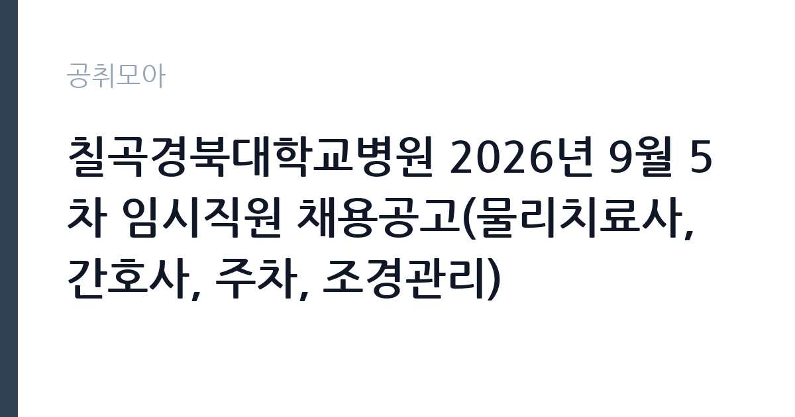

[공공기관] 칠곡경북대학교병원 2026년 9월 5차 임시직원 채용공고(물리치료사, 간호사, 주차, 조경관리)
경북대학교병원 · 대구 · 마감 2026-09-28 (D-6) · 출처 잡알리오

한눈에 보는 모집 조건
| 기관 | 경북대학교병원 |
|---|---|
| 공고명 | 칠곡경북대학교병원 2026년 9월 5차 임시직원 채용공고(물리치료사, 간호사, 주차, 조경관리) |
| 고용형태 | 기간제 |
| 근무지 | 대구 |
| 게시일 | 2026-09-23 |
| 마감일 | 2026-09-28 (D-6) |
지원자격, 이렇게 읽으세요
- 공공기관 채용공시
- 세부 조건은 원문 공고문 확인
분야별 자격요건이 다르게 적용됩니다. 물리치료사는 물리치료사 면허 소지자, 간호사는 간호사 면허 소지자가 지원 대상입니다. 운영지원 주차 분야와 업무보조 조경관리 분야는 자격에 제한이 없어 학력과 경력에 관계없이 지원하실 수 있습니다. 임시직원 채용이므로 공통적으로 병원 인사규정의 결격사유에 해당하지 않아야 합니다. 면허 소지자는 면허증 사본을, 자격무관 분야는 이력서와 자기소개서를 중심으로 준비하시기 바랍니다. 세부 제출서류와 접수방법은 칠곡경북대학교병원 채용 게시판의 원문에서 확인하시기 바랍니다.
이 공고의 포인트
첫 번째 포인트는 한 번의 공고로 4개 직종을 함께 뽑는다는 점입니다. 면허 보유자부터 자격무관 지원자까지 각자의 조건에 맞는 분야를 고를 수 있습니다. 두 번째로 마감일이 9월 28일로 매우 촉박해, 일찍 움직이는 지원자에게 유리합니다. 세 번째로 칠곡경북대학교병원은 경북대학교병원의 분원으로, 대학병원 근무 경력은 향후 병원 취업 시 경력으로 인정받을 수 있습니다. 임시직이지만 의료기관 실무 경험을 쌓기에는 좋은 발판이 될 수 있습니다.
전형은 어떻게 진행되나
전형은 서류전형과 면접전형으로 진행되는 것이 일반적이며, 세부 일정은 병원 채용 게시판의 원문 공고에서 확인하시기 바랍니다. 접수 기간이 짧으므로 원문을 확인하는 즉시 지원서를 작성하시는 것이 좋습니다. 의료기사직은 면허증과 경력증명서가 핵심 평가 자료가 되며, 주차와 조경관리 분야는 성실성과 근무 가능 여부가 중요하게 평가될 수 있습니다. 면접에서는 교대근무와 주말근무 가능 여부를 직접 묻는 경우가 많으니 미리 정리해 두시기 바랍니다.
원문에서 확인한 전형 방식
1) 의료기사(물리치료사): 물리치료사 면허 소지자 2) 간호사: 간호사 면허 소지자 3) 운영지원(주차): 자격무관 4) 업무보조(조경관리): 자격무관
이런 분께 추천해요
- 물리치료사나 간호사 면허를 보유하고 대학병원 근무 경험을 쌓고 싶으신 분
- 자격무관 분야로 병원 취업을 시작하려는 대구·경북 지역 구직자
- 짧은 접수 기간 안에 빠르게 지원할 수 있는 준비된 지원자
지원 전 체크리스트
- 지원하려는 분야의 자격요건(면허·자격무관)을 정확히 확인했습니다
- 마감일 9월 28일 이전에 접수할 수 있도록 일정을 잡았습니다
- 면허증 사본과 이력서·자기소개서를 준비했습니다
- 병원 채용 게시판 원문에서 접수방법과 제출서류를 확인했습니다
모집 일정과 제출 타이밍
마감일은 2026년 9월 28일입니다. 게시일 9월 23일부터 계산하면 접수 기간이 6일에 불과하므로, 원문 확인과 지원서 작성을 최대한 서둘러야 합니다. 주말이 포함될 수 있어 방문접수라면 평일 접수 가능 시간을 확인하시기 바랍니다. 서류 합격자 발표와 면접은 마감 직후 빠르게 진행될 가능성이 크므로, 면접 준비도 미리 시작하시기 바랍니다. 접수 마감 시간을 놓치지 않도록 병원 게시판의 원문을 다시 한번 확인하시기 바랍니다.
직무 이해하기: 공공기관
물리치료사는 재활의학과 등에서 환자의 기능 회복을 돕는 치료 업무를 맡으며, 간호사는 병동과 외래에서 진료 보조와 환자 간호를 담당합니다. 주차 운영지원은 병원 내 주차장의 질서 유지와 이용 안내를, 조경관리 업무보조는 병원 부지 내 조경 유지와 환경 관리를 돕는 역할을 맡습니다. 대학병원은 환자 안전과 친절 응대를 중시하므로, 모든 직종에서 기본적인 서비스 마인드가 요구됩니다. 공공기관 소속 병원 임시직원으로 근무하게 됩니다.
자기소개서 작성 팁
자기소개서에서는 지원 분야에 맞는 경험을 중심으로 작성하시기 바랍니다. 의료기사직은 실습과 임상 경험을 구체적으로 풀어쓰고, 주차와 조경관리 분야는 성실하게 근무했던 사례를 제시하는 것이 좋습니다. 대학병원을 선택한 이유를 해당 병원의 특성과 연결해 진정성 있게 서술하시기 바랍니다. 임시직이라는 점을 이해하고 기간 동안 성실히 근무하겠다는 의지를 보여주시기 바랍니다. 분량은 간결하게, 오탈자 없이 작성하시기 바랍니다.
면접 준비 포인트
면접에서는 근무 가능 시간과 교대·주말근무 수용 여부를 확인하는 질문이 나올 가능성이 큽니다. 솔직하게 답변하되, 병원 근무의 특성을 이해하고 있다는 점을 함께 보여주시기 바랍니다. 의료기사직은 기본적인 술기와 환자 응대 경험을 질문받을 수 있으니 대표 사례를 준비하시기 바랍니다. 주차와 조경관리 분야는 민원 응대 태도와 안전 의식을 평가할 수 있습니다. 단정한 복장과 밝은 태도로 임하시기 바랍니다.
급여·근무조건 읽는 법
보수 수준은 원문 공고문에서 확인하셔야 합니다. 대학병원 임시직원의 급여는 병원 내규에 따라 직종별로 책정되며, 통상 월급제 또는 시급제로 지급됩니다. 의료기사직은 면허 보유를 전제로 한 급여 테이블이, 주차와 조경관리 분야는 최저임금 이상의 운영지원 급여가 적용되는 것이 일반적입니다. 정확한 금액과 지급 방식, 4대 보험 적용 여부는 칠곡경북대학교병원 채용 게시판의 원문에서 확인하시기 바랍니다. 수당과 근무시간 조건도 원문에서 함께 살펴보시기 바랍니다.
자주 묻는 질문
- 어느 분야에서 지원할 수 있습니까
물리치료사와 간호사, 주차 운영지원, 조경관리 업무보조 등 4개 분야입니다. 의료기사 2개 분야는 면허가 필요하고, 나머지 2개 분야는 자격에 제한이 없습니다. - 접수 기간이 얼마나 됩니까
게시일 9월 23일부터 마감일 9월 28일까지 약 6일로 매우 짧습니다. 원문을 확인하는 즉시 지원 준비를 시작하시기 바랍니다. - 임시직원의 근무 기간은 어떻게 됩니까
임시직원은 기간을 정해 근무하는 형태로, 세부 기간과 연장 가능 여부는 원문 공고문에서 확인하시기 바랍니다.
함께 보면 좋은 공고
[공공기관] 한국연구재단 PM(기초연구본부장) 초빙 재공고 — 마감 2026-10-13[공공기관] [KDI국제정책대학원] 2026년 제10차 인턴직원 채용(경영기획) — 마감 2026-10-08[공공기관] '탁구 영상 데이터 기반 동작 추정을 통한 스트로크 유형 분류 모델 연구' 초빙연구원(나급) 채용 공고 — 마감 2026-10-07출처: 잡알리오 공개정보를 바탕으로 공취모아가 정리한 안내글입니다. 모집 조건·일정은 변경될 수 있으니 지원 전 반드시 원문 공고문을 확인하세요. 본 글은 정보 제공용이며 합격을 보장하지 않습니다.